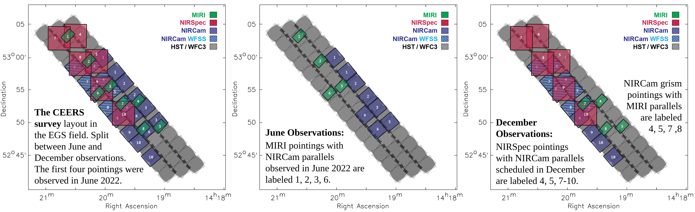
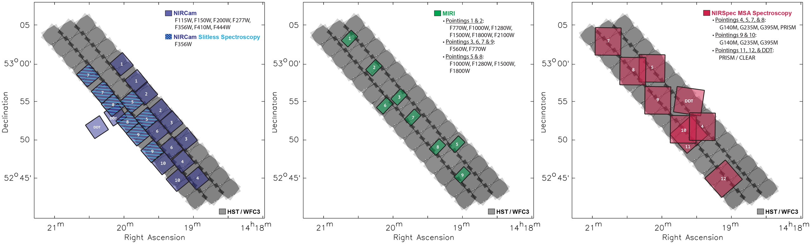
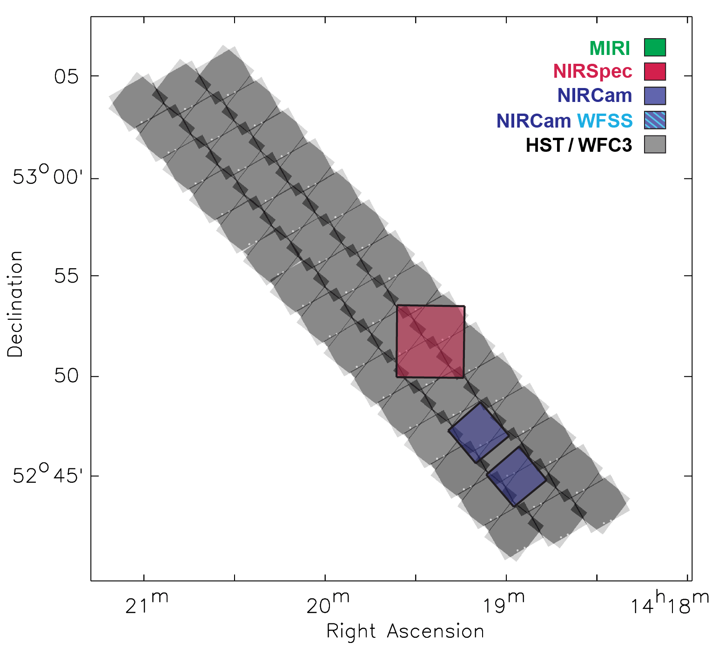

The CEERS observations were schedulable in June and December (with a 180° flip). We obtained observations in two epochs, with four MIRI + NIRCam imaging pointings observed in June 2022, and the remaining six NIRSpec MSA + NIRCam imaging and four NIRCam grism + MIRI imaging pointings observed in December 2022. Following a short in the MSA that affected two NIRSpec PRISM observations, we obtained two additional PRISM reobservations in February 2023. You can access all CEERS observations on MAST.
We show here the complete survey layout (left), separating the June observations (middle) and the December/February observations (right). We also include the DDT NIRSpec follow-up of Maisie's Galaxy led by Pablo Arrabal Haro (DDT 2750).

(Click image to enlarge.)
×
Here we show the survey layout separated by instrument, with NIRCam imaging and WFSS (left), MIRI imaging (middle) and NIRSpec MSA PRISM and medium gratings (right). We again include the DDT NIRSpec follow-up of Maisie's Galaxy led by Pablo Arrabal Haro (DDT 2750).

(Click image to enlarge.)
×
Finally, here is an animated GIF building the CEERS survey layout up pointing by pointing. This animation helps show which primary and parallel pointings are related. Images and GIF courtesy of Dale Kocevski.

Click below to download a zipped file containing NIRCam, NIRSpec and MIRI pointing maps for each configuration. These maps are approximate, good to within ~10". (Note that these December and Full Survey pointing maps are versions from before the observations were executed. We will update these pointing maps soon.)
Click below to download the list of objects which received NIRSpec MSA slits in our original Aug 2017 APT submission. This is just one realization of what the final configuration will be, but it gives a rough idea of the numbers of which types of sources will receive slits.
The NIRCam observing strategy is set by the primary science goal of detecting a large sample of z~9-13 galaxies. CEERS is based on 10 NIRCam pointings covering ~100 square arcmin of the EGS field. CEERS will obtain:
NIRCam imaging in 10 pointings, pairing the SW and LW filters. The following represent the planned 5σ point source depths per filter.
SW Filter
Depth (5σ pt. source)
LW Filter
Depth (5σ pt. source)
F115W
29.15
F277W
29.15
F150W
28.9
F356W
28.95
F200W
28.97
F444W
28.6
F410M*
28.4
* F410M will be obtained for the 6 NIRCam pointings that do not use the Slitless Spectroscopy mode.
F115W + F150W + F200W will probe the
Lyα break and will be paired with the LWF
filters F277W, F356W and F444W at no cost.
Additional F115W imaging will increase the
dynamic range of the detectable Lyα breaks.
In 4 fields, these additional F115W exposures
are paired with the grism (R~1500), allowing the
measurement of spectroscopic redshifts of z>4
star-forming galaxies and the calibration of NIRSpec
slit losses
In the remaining 6 fields, the additional
exposures will be paired with F410W, which acts as
a narrow-band filter for [OIII] emission at
6.7 < z < 7.6
NIRSpec
The NIRSpec MSA observations address diverse goals: measuring redshifts of high-priority distant galaxies, characterizing ISM and AGN evolution, and testing JWST observing strategies for Cycle 2. CEERS will observe 6 pointings with R~1000 and 4 pointings with R~100. The NIRSpec strategy includes:
Orientation and tiling to maximize overlap with NIRCam and HST;
R=1000 at 3 grating settings efficiently characterizes emission-line strengths;
Diverse, high-priority targets with most lacking spectroscopic redshifts;
Prism observations for efficient measurement of broad continuum features;
Testing the impact of object centering through small dithers.
MIRI
The MIRI observations address two goals:
In the three MIRI pointings overlaping the NIRCam
mosaic, we aim for 5σ detections of the
highest–redshift candidates in F560W and F770W,
achieving long-wavelength constraints on z=4-10
candidate SEDs.
In the remaining three pointings, we will use
the continuous wavelength coverage of
F770W, F1000W, F1280W, F1500W, F1800W and F2100W
to study the rest-mid-IR features of galaxies,
providing constraints on SFR & AGN diagnostics
at z=1-3.
Filter
Depth (5σ pt. source)
Pointing*
F560W
26.2
6,8,10 (1,3,5)
F770W
26.0 / 26.2 / 25.5
6,8 / 10 / 9 (1 / 3,5 / 4)
F1000W
24.8
5,7,9 (2,4,6)
F1280W
24.3
5,7,9 (2,4,6)
F1500W
23.8
5,7,9 (2,4,6)
F1800W
22.9
5,7,9 (2,4,6)
F2100W
21.6 / 21.8
5,7 / 9 (2 / 4,6)
* Pointing numbers refer to the June configuration. December pointing IDs are in parentheses.